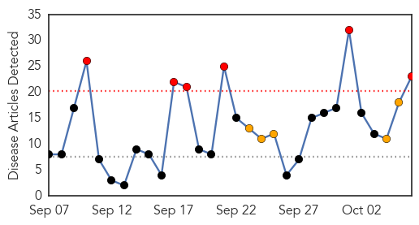
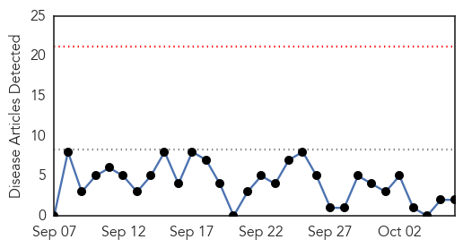

Influenza
30-Day Web Trend
6 alerts, 5 warnings

30-Day Twitter Trend
0 alerts, 0 warnings

Article Locations


Article Confidences

Top Articles:
- 0.999
- October Marks Start Of Flu Season
- 0.998
- Doctors anticipate nasty flu season
- 0.997
- Flu Shots Keep People Out of Hospital
- 0.997
- Flu-associated pneumonia tied to skipped flu vaccine
- 0.986
- What you need to know about this year's flu vaccine
- 0.981
- Seasonal illness on the rise, wash your hands
- 0.980
- FDA Clears the Focus Diagnostics Simplexa™ Flu A/B & RSV Direct Test to Include 53 New Virus Strains for the 2015-2016 Flu Season
- 0.978
- Flu Vaccine Helps Reduce Hospitalizations Due to Influenza Pneumonia
- 0.960
- Focus Diagnostics receives FDA clearance for flu, RSV test
- 0.958
- Get flu vaccine now, says Luxembourg's Health Ministry
- 0.955
- News Scan for Oct 06, 2015
- 0.940
- Studies Find Flu Vaccines Can Harm Your Heart, Infant And Fetus
- 0.925
- Flu Season Begins: Authorities Predict a Tough One
- 0.904
- Flu vaccine expected to be more effective this year
- 0.885
- Today's stories from newspapers in North Bay Nipissing
- 0.881
- Summit, Apache County Public Health offering free flu shots
- 0.872
- Howell County Health Department to host flu shot clinics –
- 0.776
- Nurse Flu Shot Compliance Reverberates Through Community
- 0.751
- October 6, 2015 Archives
- 0.751
- October 6, 2015 Archives
- 0.716
- Tough lessons learned from bird flu outbreak
- 0.584
- Today's stories from newspapers in Halton Hills
- 0.547
- New flu mapping system developed by Valley ER doctor
Top Tweets:
-
No tweets found for Oct 06, 2015
West Nile Virus
30-Day Web Trend
0 alerts, 0 warnings

30-Day Twitter Trend
0 alerts, 0 warnings

Article Locations
Article Confidences

Top Articles:
Top Tweets:
-
No tweets found for Oct 06, 2015